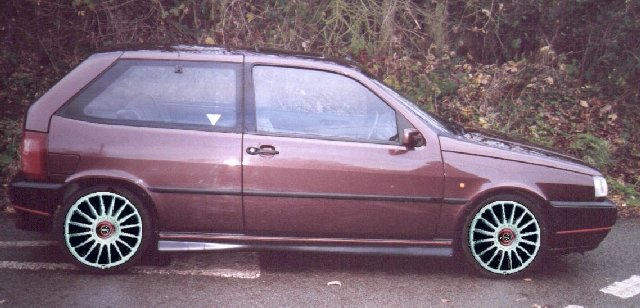

Artists impression of my FIAT Tipo 16V

What my Tipo would look like with 17"
TSW
Imola wheels and 205/40 tyres.
Please let
me
know what you think,
am I just a sad dreamer or is it worth spending a grand making my car look like this!